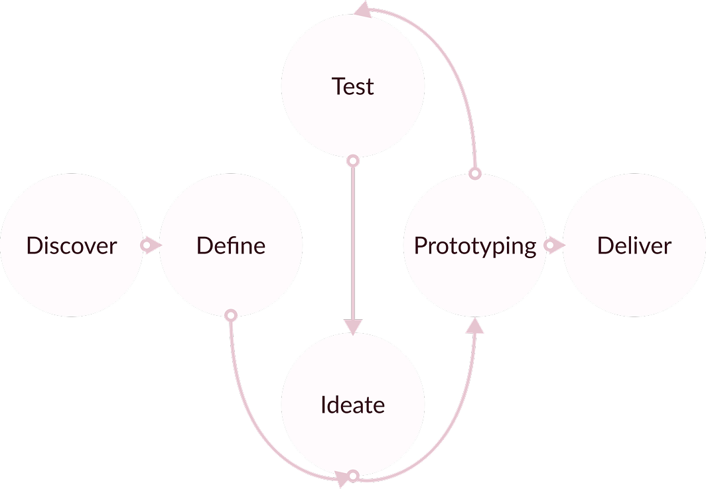
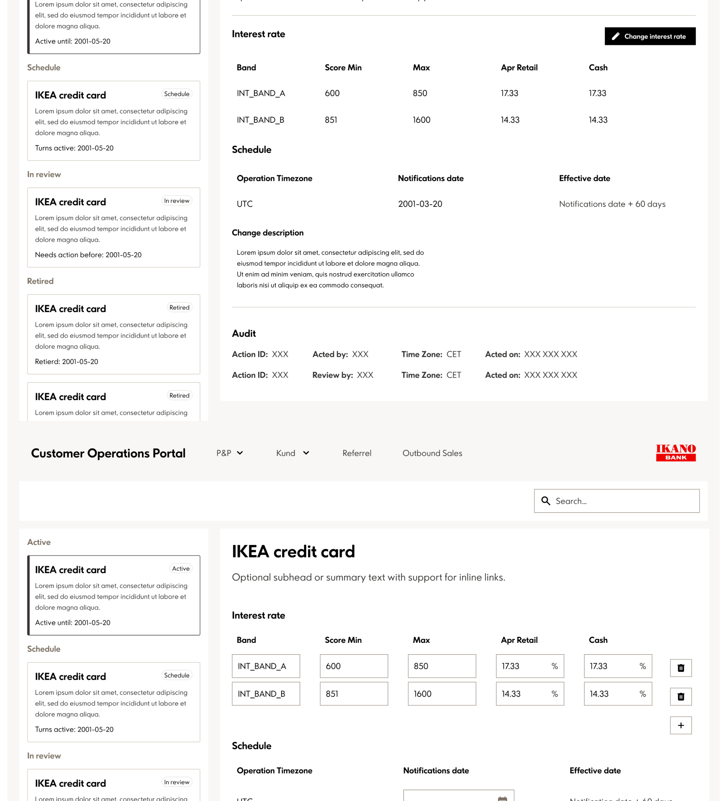
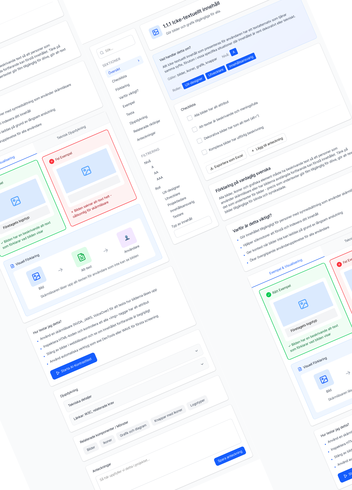

SAGA
ELFSTADIUS
Design thinking
My way of working follows a structured process to ensure the most optimal results possible. By following this process, I allow myself the space to focus on every detail that matters in creating an intuitive flow. I strive to build usable and accessible interfaces, all rooted in a fact-based foundation where every design decision is made with both the user and the organization in mind.


Design Pattern
Creating a unified and scalable design standard for forms to ensure consistency and efficiency across the entire organization.

CRM system
Streamlining complex workflows for product specialists through research-driven redesign and intuitive information architecture.

WCAG Documentation
Reimagining accessibility documentation by transforming technical complexity into an intuitive and user-friendly experience for designers.
Contact me
Thank you for stopping by!
I am currently looking for new opportunities starting in the summer/autumn of 2026. Did you see something that caught your eye, or are you looking for a passionate designer to join your team?
Please don't hesitate to reach out, my inbox is always open and I'd love to chat! :)